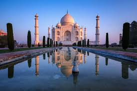

In india , there are many destination to recommend , I can't even take all names some of them which is highly recommend is -
- MUMBAI
- DELHI
- GOA
- JAIPUR
- AGRA
the city of dreams , with many places to visit like mrine drive , gateway of india and also mumbai is hub of bollywood so we can also enjoy it .
2) Delhi --
The capital city of india , we can visit there and see historical monuments of india , cultural diversity and mordern lifestyle . there are famous places to visit like red fort , qutub minar , india gate , lotus temple and many more .
3) Goa --
Goa is india los vegas , anyone want to enjoy beaches , nightlife , parties , and you can also enjoy there culture , many foreigners visit there , even you can enjoy portuguese heritage .
4) Jaipur --
known as pink city , there are many forts to visit which are also in good condition , well maintained , famous for hawa mahal , amer fort , other royal palaces , also there you can ride elephant in elephant park .
5) Agra --
Home of Taj mahal , one of the seven wonders of the world . in agra there is many other things also to visit not only taj mahal is key point , also agra petha is too famous because of his delecious flavour .
IAMGES
MUMBAI

DELHI


GOA
JAIPUR


AGRA
